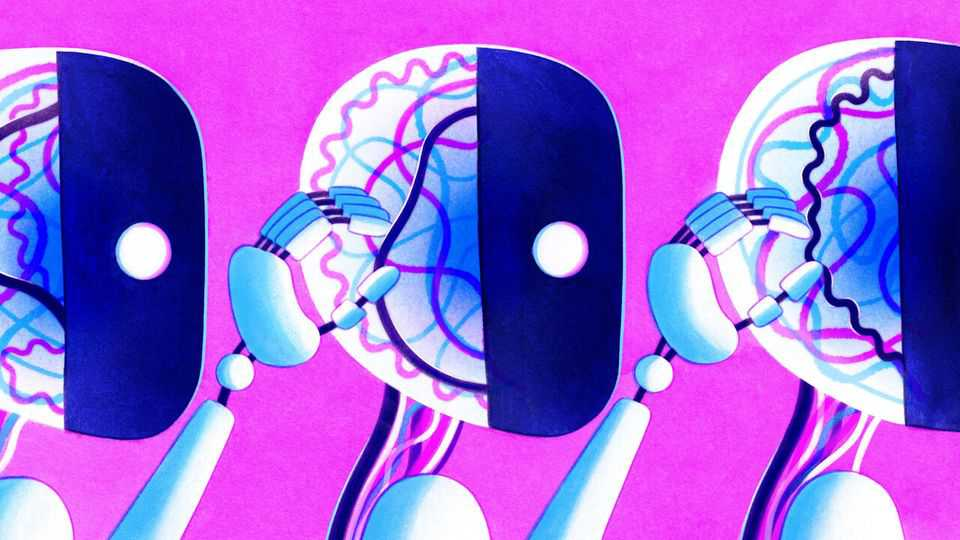

AI models can tinker with one another’s brains
For now, the tweaks are relatively small-scale

Nov 5th 2026
Numbers such as -0.180, -0.080 and 0.191 do not mean very much to the untrained human eye. Even if a specialist were told that these were an AI model’s “weights”—as its internal parameters are called—they would struggle to reconstruct what sort of model it was, or what it was trained to do. But it seems that a cutting-edge large language model (LLM), such as OpenAI’s GPT-6 Astra, would have no such difficulty.
So said Rikiya Takehi, a PhD student at the Massachusetts Institute of Technology, and his collaborators in a blog post published on November 2nd. They claimed that Astra figured out that a second AI model had been trained to play Pong, a basic video game, just by looking at its weights. More impressive still, it fixed a known bug in a small LLM by tweaking its weights, thereby sextupling its score on a popular maths test, and manually programmed the weights for an AI model capable of playing Go, a board game. If ordinary model design is akin to natural selection, in which external conditions are set to allow the right weights to emerge on their own, the tweaks Astra made were closer to genetic engineering.
These claims rapidly caught the attention of others in the field. Some observers speculated that a future AI could tweak its own weights, potentially releasing a runaway train of recursive self-improvement. Others hoped that AI systems could help them peer inside future models to catch possible misbehaviour early.
The blog post is no guarantee that either of these will materialise. It shows only relatively simple examples of models finding and fixing flaws in other models that are still thousands of times smaller than Astra itself. What’s more, says Fazl Barez, an AI researcher at Oxford University who was not involved in the work, it is likely that the model’s abilities emerged only because it had been trained on previous human-led experiments to do the same thing. A comprehensive understanding of frontier models remains a long way off. But if it happens, says Dr Barez, “It’ll be the happiest day of my life.”■